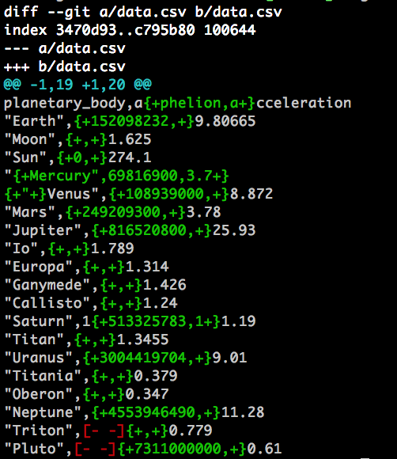
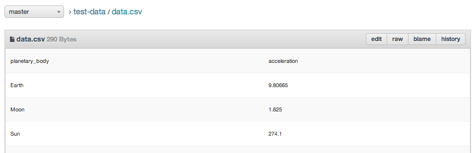
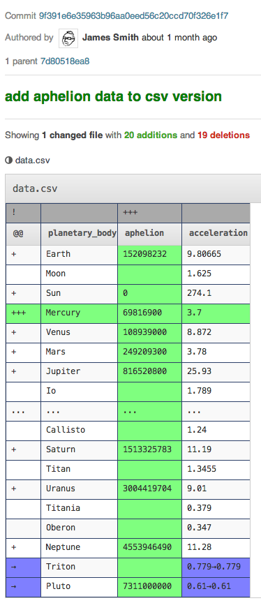

Adapting Git for simple data
A while ago I wrote about using Git for data publishing, and talked about how the tools and particularly the workflow used by many open source projects could revolutionise how we create, publish, and collaborate on open data. I'm not the only one thinking this, of course; amongst many others, Rufus Pollock from the OKFN has written on the same subject many times, and they've been hosting datasets on Githubfor a good while now, as have other organisations.
However, we've not cracked the tooling problem. Data is complex stuff; it may be that we need new tools to handle it, like R&Wbase, or Max Ogden's new dat project. However, I tend to side with those who reckon we can do a lot more with the tools we already have (not that there are sides or anything, we're all friends). As Ben Balter wrote:
We should be co-opting proven tools already in the hands of public servants and making it so ridiculously straightforward for government agencies to distribute information and build collaborative communities around shared problems that it would be criminal for them not to.
With this in mind, I've continued hacking away at the tools we already have, trying to make them work for data. Not all data, but certainly for small, simple datasets, particularly data in simple CSV format. At this point, we're going to dive into a few Git internals, so apologies if it gets a little technical from here on in.
Making Git work with CSVs
The main problem with using git for things like CSV formats comes because it stores changes line-by-line. If you compare two files, you can see the lines that have changed. That's great if your information is line-oriented, but it falls over for CSV. Row operations are OK, but column operations hit every single line, making git's built-in comparisons useless.
What can we do about this? As a user, I don't care how efficiently the change is stored internally, as long as I can understand what's happening, so this really just comes down to presentation.
Let's take a look at a sample bit of data, and let's look at the one bit of software everyone using git has - the command-line interface. Here's a diff of a change I made:
git diff data.csv

So far, so impenetrable. I think I can see that there's a new column in there, but if anything else changed, I'm certainly not going to spot it in amongst all that.
However, git allows us to customise how we show diffs for different formats. Using git attributes, we can tell git how we want it to handle CSV files, including customising various things about how diffs are performed.
We also need to use git's--word-diff option, which is used to show differences within lines in text by splitting along word boundaries. If we tell git that we want to use the word-diff, we can then customise how the line is split up for CSV files in particular.
Let's try something stupid first, and say that every character should be treated as a separate word when doing word-diffs. We add a csv file type to a shared git attributes file, and add a diff filter for CSV that specifies a simple word regex that will match any character:
# ~/.config/git/attributes
*.csv diff=csv
# ~/.gitconfig
[diff "csv"]
wordRegex = .
git diff --word-diff data.csv

This is already a lot better. We can see what's going on at least. Not only have I added a column, but I've added a row for Mercury, and fixed some formatting near the end. I really should learn to split up my commits better.
However good this looks, it's not right. The diff picks up the wrong bits as part of a change sometimes, like the 'a' in the first line, or the quotes at the start of the Mercury line. Let's make it a bit more CSV-specific.
# ~/.gitconfig
[diff "csv"]
wordRegex = [^,\n]+[,\n]|[,]
The regular expression here took a bit of working out, so I won't explain character by character, but suffice it to say that it tells git that 'words' are things that end in commas or newlines. That turns out to do exactly what we want:
git diff --word-diff data.csv

Not only do the diffs now line up to fields, we get entire field changes being shown, as in the last two lines.
This is great, and means that for people who use the command line, CSV diffs are now a possibility. Unfortunately, this has to be configured per-user; there is no way to do it for a repository. With that in mind, I've tried to make the configuration as easy as possible, and created a script called csv-my-git which sets this up for you on your local machine. You can just enter the following command in a terminal, and it will sort it all out for you:
curl -L http://theodi.github.io/csv-my-git/install.sh | bash
It sets up the format, and also adds a git diffcsv alias for you to simplify the command line a bit (as suggested by Sam Leach).
There are some obvious problems here - firstly, it assumes a very simple CSV format. If you use tabs to separate your fields, then this will currently not work. However, it's open source, so improvements and contributions are welcome! Secondly, you have to include the --word-diff option (or use diffcsv) every time; if anyone knows how to make word-diff the default for a particular file type, I will buy you a decent number of drinks.
Customising Web UIs
The command line is all very well; it lets us prove that this is possible, but even I, as a seasoned developer, rarely use git on the command line. Let's make something a bit more usable.
As the problem is one of display and tooling, we don't need to fundamentally change git. We just need to change the tools; and the big tool that we want this to work with is GitHub. If we could get proper CSV support into GitHub's commit views and pull requests, well, that would be a thing of beauty.
Unfortunately for us, GitHub isn't open source, so we can't just change it. Fortunately, however, there is an open source github-alike called Gitlab, which we can change. Yay open source!
Gitlab's default view for CSV is to show it as a text diff, very similar to the first command-line one above. Not useful. However, it's incredibly easy to configure. We add a method to detect if a file is a CSV, and then we can write a CSV-specific view. Here's a view showing the contents of a CSV file in a table, rather than just as text, in Gitlab:

Nice and simple, but proving we can do it.
Next thing is to add diff support. Now, showing diffs in tabular format, that's a non-trivial UI challenge, I thought to myself. Then up popped an incredibly well-timed post on the OKFN Labs blog by Paul Fitzpatrick about his coopyhx project, which does exactly this. It even has a bit of Javascript which, given two tables, shows the diff in a really useful way.
So, back to Gitlab; all we need is the old file, the new file, a bit of coopyhx javascript, and suddenly we have a diff view of CSV files right there in your commit logs and pull requests:

This is, quite simply, spectacular. If we could get GitHub to add something like this, I think around 95% of our data sharing and collboration work would get easier. Failing that, we just need someone to host a Gitlab instance with CSV support!
The Gitlab work is still very much a work in progress, but you can get the code from the csv-view branch of our gitlab fork, and also weigh in on the Gitlab pull request. As with the git configuration above, it needs to be more robust and handle other formats, but I think this is a really good step towards solving some of problems we have with git for data, and proving that we really can do a hell of a lot with the tools we already have.
Update:
A few days after this was published, GitHub released an update that shows CSVs in their web interface. It includes linking of lines, search, filtering, and is really really nice. I think that while this is a big step forward, the really useful stuff comes when we can properly use the fork / pull request model with data, and diffs are essential for that. Unfortunately, CSV diffs are still shown in the traditional line-at-a-time way. You never know though, maybe it won't be long.